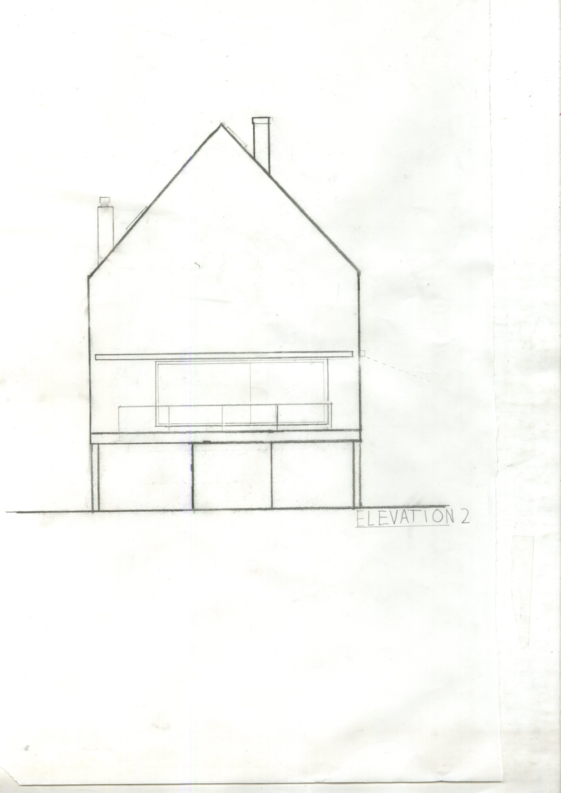
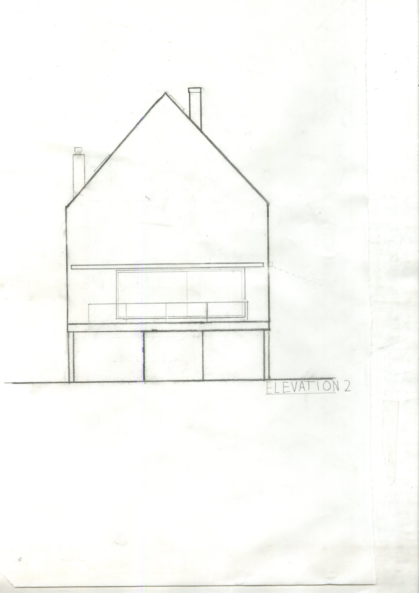

A project by the architects, Hertzog and de Meuron in leymen france, a house made to represent the vision of a child, a child’s drawing showing an almost dreamlike, idealistic house. Made in concrete, made to evolve with nature, and have a different spatial experience everytime you see it.
We were asked to study the house, find out who made it, why they made it and what it’s effects were. We were also told to study the house’s structure, and understand what each method of visual communication depicts and leaves out (plans, elevations, paralline drawings and sections).
We were then made to recreate each of these visual communication tools on our own, by drafting the plans, sections etc.
Finally, we were made to compile all this knowledge and create a study model of the house out of chipboard.
Then, as a finishing act, we turned the raw study model into a finished basswood model.


 
